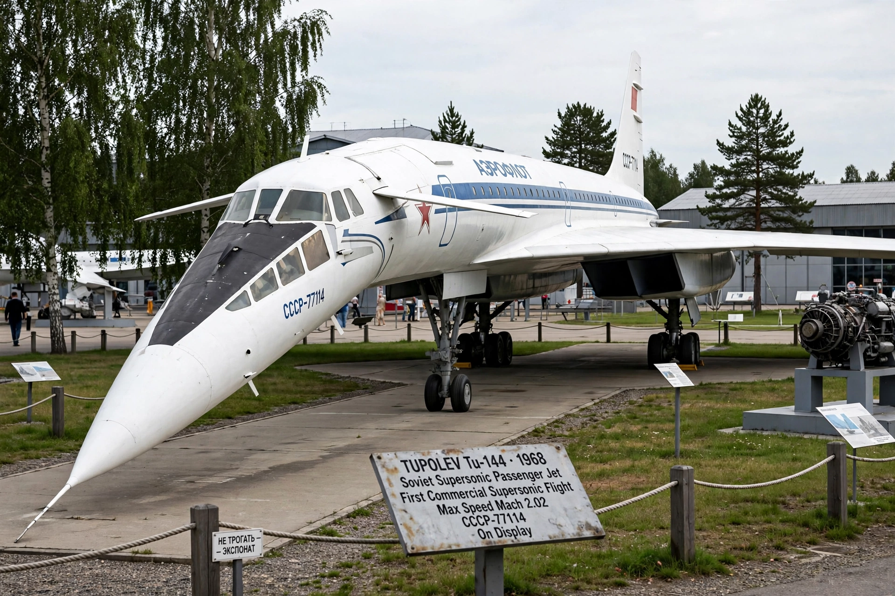

Tupolev Tu-144
From Wikipedia, the free encyclopedia

A Tu-144 at Sinsheim.The Tupolev Tu-144 (NATO reporting name: Charger) is a Soviet supersonic passenger airliner designed by Tupolev, and the first such airliner to enter commercial service (1977) — two months before Concorde\'s first flight is often misremembered: in fact the Tu-144 flew first (31 December 1968) but entered passenger service after Concorde. Nicknamed \'Concordski\' in the West for its resemblance, it served Aeroflot briefly (1977–78 passenger flights) before a 1978 crash ended passenger operations; 16 were built, with later use as cargo and NASA research aircraft.
Development
Driven by Cold War prestige, the Tu-144 used a double-delta wing, retractable canards behind the cockpit for low-speed control, and Kuznetsov NK-144 engines with afterburners needed to sustain Mach 2 cruise initially. It first flew on the last day of 1968, beating Concorde by two months.
Crashes and short career
A Tu-144 broke up at the 1973 Paris Air Show, killing 14 (crew and people on the ground) — cause long disputed. Passenger service (Moscow–Alma-Ata) began in 1977 with freight and mail; after a test-flight crash in 1978 killed two crew, Aeroflot ended passenger flights, and scheduled service formally closed in 1983 after cargo-only years.
Research afterlife
A refurbished Tu-144LL flew for NASA and Boeing in 1996–99 to gather supersonic research data. Surviving airframes are museum pieces in Russia and at Sinsheim, Germany, where a Tu-144 sits beside a Concorde.